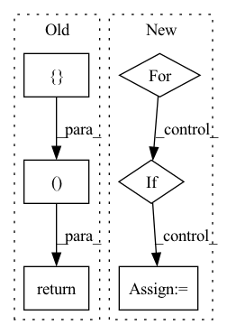

Pattern ID :2681
Before Change
hPad = max(0, 32 - h)
wPad = max(0, 32 - w)
x = F.pad(x, (0, wPad, 0, hPad))
return self._quantizer(self._encoder(x)), torch.tensor([h, w], dtype=torch.int)
class RefDecoder(nn.Module):
def __init__(self, m, k, channel):After Change
def forward(self, x: torch.Tensor) -> List[torch.LongTensor]:
codes = list()
latent = self._encoder(x)
for i in range(self._levels):
head = self._heads[i]
z = head(latent)
if i < self._levels - 1:
mapper = self._mappers[i]
latent = mapper(latent)
code = self._quantizers[i](z)
hard = self._deQuantizers[i](code)
latent = latent - hard
else:
code = self._quantizers[i](z)In pattern: SUPERPATTERN
Frequency: 4
Non-data size: 6
Instances Fragment ID: 8779061
Project Name: xiaosu-zhu/mcquic
Commit Name: 3ca26f40dc8d00ed5fbebee4a77654f9d1d51939
Time: 2021-10-08
Author: xiaosu.zhu@outlook.com
File Name: src/mcqc/evaluation/refModel.py
M Class Name: RefEncoder
N Class Name: RefEncoder
M Method Name: forward(2)
N Method Name: forward(2)
M Parent Class: nn.Module
N Parent Class: nn.Module
M File Name: src/mcqc/evaluation/refModel.py
N File Name: src/mcqc/evaluation/refModel.py
M Start Line: 106
M End Line: 114
N Start Line: 136
N End Line: 150
Before Change
hPad = max(0, 32 - h)
wPad = max(0, 32 - w)
x = F.pad(x, (0, wPad, 0, hPad))
return self._quantizer(self._encoder(x)), torch.tensor([h, w], dtype=torch.int)
class RefDecoder(nn.Module):
def __init__(self, m, k, channel):After Change
def forward(self, x: torch.Tensor) -> List[torch.LongTensor]:
codes = list()
latent = self._encoder(x)
for i in range(self._levels):
head = self._heads[i]
z = head(latent)
if i < self._levels - 1:
mapper = self._mappers[i]
latent = mapper(latent)
code = self._quantizers[i](z)
hard = self._deQuantizers[i](code)
latent = latent - hard
else:
code = self._quantizers[i](z)
codes.append(code)
return codes
Fragment ID: 8779047
Project Name: xiaosu-zhu/mcquic
Commit Name: 3ca26f40dc8d00ed5fbebee4a77654f9d1d51939
Time: 2021-10-08
Author: xiaosu.zhu@outlook.com
File Name: src/mcqc/evaluation/refModel.py
M Class Name: RefEncoder
N Class Name: RefEncoder
M Method Name: forward(2)
N Method Name: forward(2)
M Parent Class: nn.Module
N Parent Class: nn.Module
M File Name: src/mcqc/evaluation/refModel.py
N File Name: src/mcqc/evaluation/refModel.py
M Start Line: 106
M End Line: 114
N Start Line: 136
N End Line: 150
Before Change
scores, feats = self.mpd(x)
score_sd, feats_sd = self.sd(x)
return scores + [score_sd], feats + [feats_sd]
After Change
x_hat_scores = [] if x_hat is not None else None
x_feats = []
x_hat_feats = [] if x_hat is not None else None
for net in self.nets:
x_score, x_feat = net(x)
x_scores.append(x_score)
x_feats.append(x_feat)
if x_hat is not None:
x_hat_score, x_hat_feat = net(x_hat)
x_hat_scores.append(x_hat_score)
x_hat_feats.append(x_hat_feat)
return x_scores, x_feats, x_hat_scores, x_hat_feats Fragment ID: 8779046
Project Name: coqui-ai/tts
Commit Name: 49e1181ea40ee95df29250120d2e343712a70793
Time: 2021-08-26
Author: egolge@coqui.ai
File Name: TTS/tts/layers/vits/discriminator.py
M Class Name: VitsDiscriminator
N Class Name: VitsDiscriminator
M Method Name: forward(3)
N Method Name: forward(2)
M Parent Class: nn.Module
N Parent Class: nn.Module
M File Name: TTS/tts/layers/vits/discriminator.py
N File Name: TTS/tts/layers/vits/discriminator.py
M Start Line: 75
M End Line: 77
N Start Line: 69
N End Line: 91
Before Change
x0 = torch.cat(
[ x, pers0.permute(1, 0, 2).reshape(pers0.shape[1], -1)return x + self.bn(x0), x_dim1
class FakeSetTopoLayer(nn.Module):
def __init__(self, n_features, n_filtrations, mlp_hidden_dim, aggregation_fn):After Change
pers1_reshaped = pers1.permute(1, 0, 2).reshape(pers1.shape[1], -1)
pers1_mask = ~((pers1_reshaped == 0).all(-1))
x1 = pers1_reshaped[pers1_mask]
for layer in self.set_fn1:
if isinstance(layer, DeepSetLayerDim1):
x1 = layer(x1, edge_slices, mask=pers1_mask)
else:
x1 = layer(x1)
else:
x1 = None
Fragment ID: 8779056
Project Name: borgwardtlab/togl
Commit Name: f6de25e187c5a78974edd07cec7fc20c675bbbc6
Time: 2021-02-02
Author: max.horn@bsse.ethz.ch
File Name: topognn/layers.py
M Class Name: SimpleSetTopoLayer
N Class Name: SimpleSetTopoLayer
M Method Name: forward(3)
N Method Name: forward(3)
M Parent Class: nn.Module
N Parent Class: nn.Module
M File Name: topognn/layers.py
N File Name: topognn/layers.py
M Start Line: 222
M End Line: 261
N Start Line: 238
N End Line: 270
Before Change
context = torch.bmm(sim, value).permute(0, 2, 1).contiguous().view(b, -1, h, w)
context = self.conv_out1(context)
x = torch.cat([ x, contextreturn x, out After Change
def forward(self, feat_maps, smap, lmap=None, shape=None):
assert not xor(self.lmap_in is True, lmap is not None)
for i, f in enumerate(feat_maps):
if f.shape[-2:] != shape:
feat_maps[i] = self.upsample(f, shape)
x = torch.cat(feat_maps, dim=1)
b, c, h, w = x.shape
Fragment ID: 8779049
Project Name: plemeri/inspyrenet
Commit Name: 722874b88a2465f214eac13d8cda7a9f446e9040
Time: 2021-11-01
Author: taehoon1018@postech.ac.kr
File Name: lib/modules/attention_module.py
M Class Name: ASCA
N Class Name: ASCA
M Method Name: forward(5)
N Method Name: forward(4)
M Parent Class: nn.Module
N Parent Class: nn.Module
M File Name: lib/modules/attention_module.py
N File Name: lib/modules/attention_module.py
M Start Line: 127
M End Line: 136
N Start Line: 81
N End Line: 132